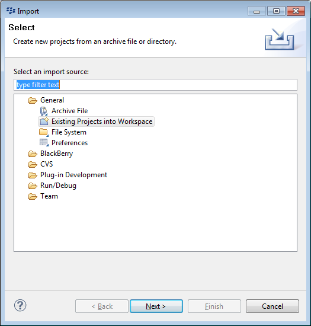
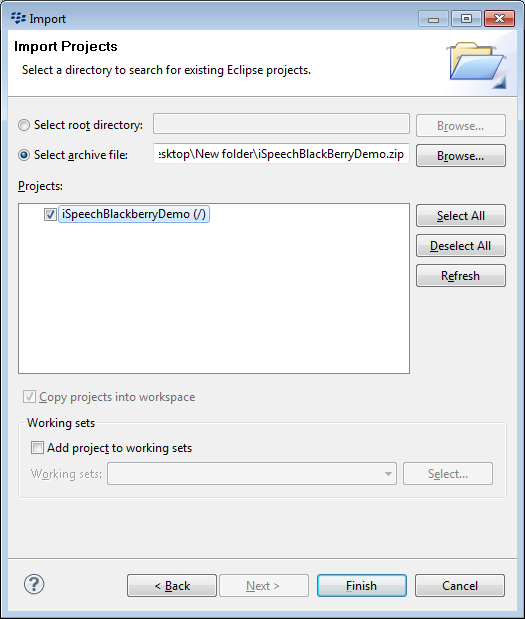
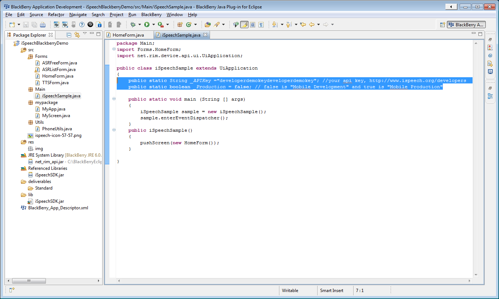
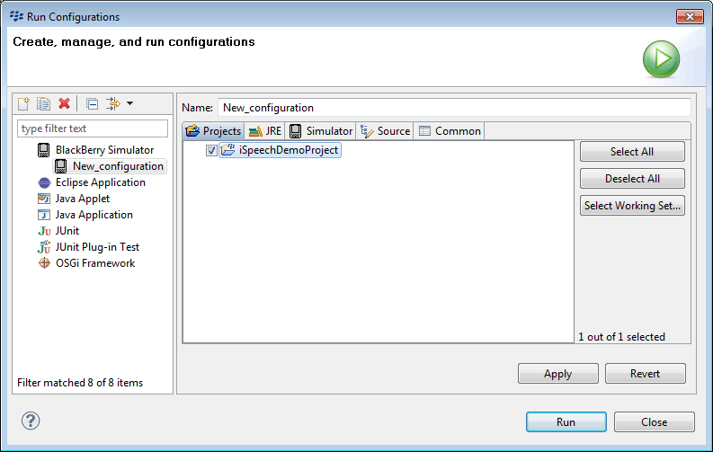
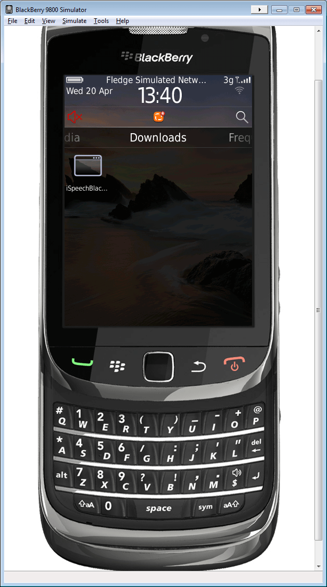
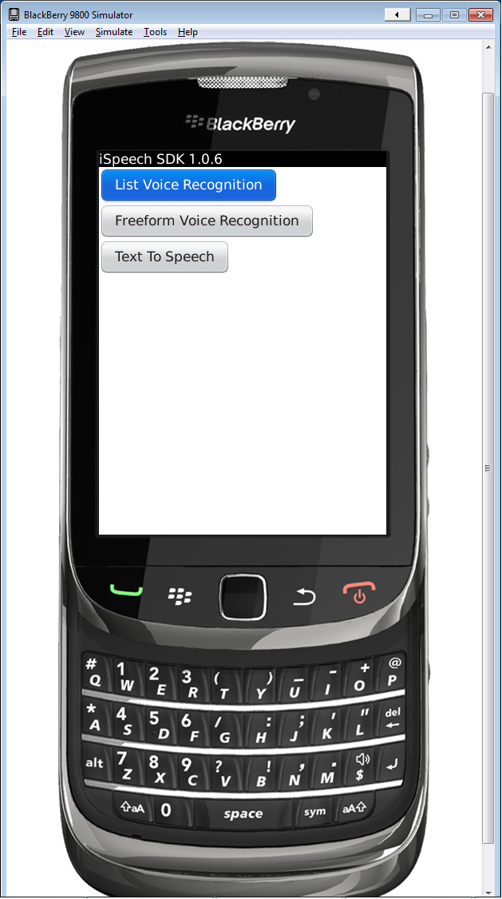
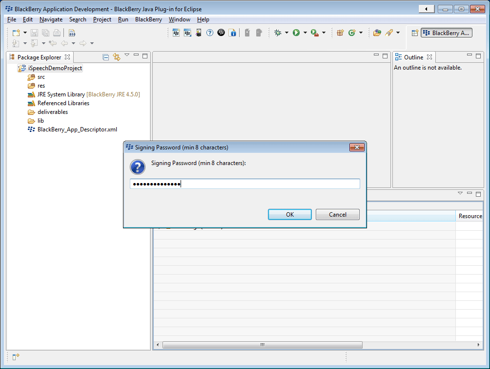
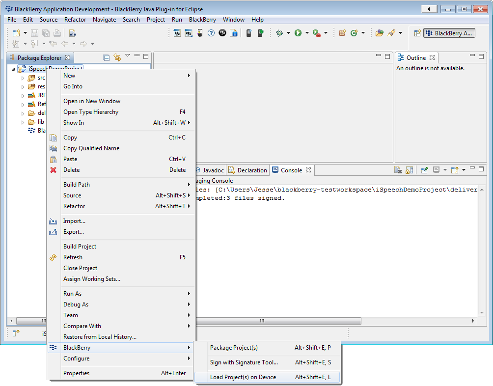

For more information visit:
http://www.ispeech.org/developers/Requirements: You must install the Blackberry Eclipse IDE.
Note: After testing, update the API Key that is stored in Main/iSpeechSample.java to your API key.
Click
File >
Import >
Existing Projects into Workspace > Click
Next >

Check
Select archive file > Click
Browse... > Select the
iSpeechBlackBerryDemo.zip > Click
Finish

Step 3: (Optional) Enter your API key and server access permission
You can use your API key by editing iSpeechSample.java. The demo can work with the API key, "developerdemokeydeveloperdemokey" and production = false.

Step 4: Setup your run configuration
In Eclipse, on the File menu: click Run > Run Configurations > Blackberry Simulator > Create a new configuration if necessary > select iSpeechDemoProject > Click Run

Step 5: Navigate to your Downloads
Open the Downloads menu from the Simulator home screen > click iSpeechBlac... application

Step 6: Test the application on the Simulator

Step 7: (To load the app onto a device) Sign the demo application with your security password
Right click on the iSpeechDemoProject > select BlackBerry > click Sign with Signature Tool... > enter your Signing Password > click OK

Step 8: Load the application on your BlackBerry device
In Eclipse, right click the iSpeechDemoProject > BlackBerry > Load Project(s) on Device > Run the iSpeechDemoProject application from the device
